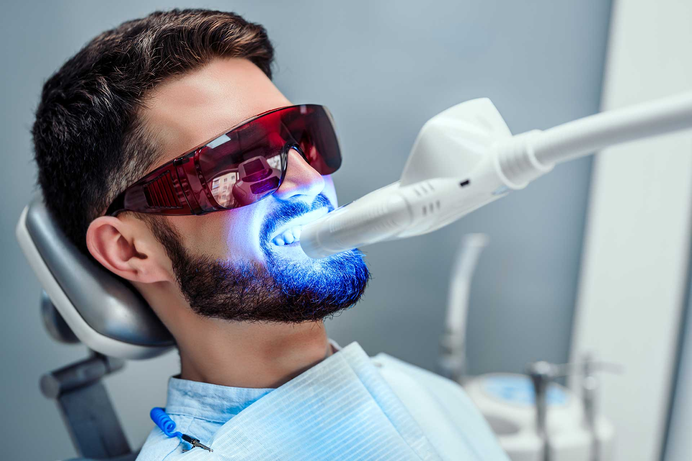

Visible Brightening
Professional-grade whitening designed to lift discoloration with precision.
Our whitening treatments are planned around your goals, sensitivity level, and timeline so you can enjoy a noticeably brighter smile with a polished, premium experience.

Whether you want a quick in-office boost or a customized take-home plan, we create whitening treatment that lifts stains while protecting enamel and minimizing sensitivity.
Professional-grade whitening designed to lift discoloration with precision.
We tailor concentration and timing to keep your treatment gentle and safe.
Every whitening plan starts with a quick smile assessment so we can choose the safest and most effective path for your goals.
We review your current shade, stain type, sensitivity, and expectations.
We recommend in-office whitening, take-home trays, or a combined approach.
Professional whitening formula helps lift stains while we monitor comfort closely.
Aftercare guidance helps maintain brightness and reduces re-staining over time.
Our whitening approach combines clinical supervision with a polished result that looks fresh, bright, and still believable.
Safe whitening decisions are easier when the process is guided by a dental team.
Many patients notice meaningful improvement in a short amount of time.
We adapt the whitening plan to make the experience as comfortable as possible.
The goal is a healthy bright smile, not an overly artificial shade.
These are the questions patients most often ask before whitening their teeth with us.